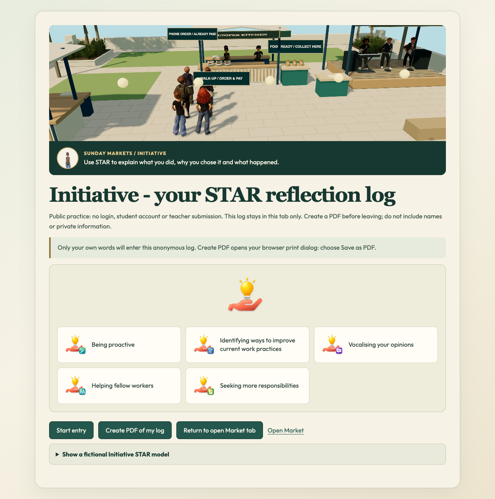
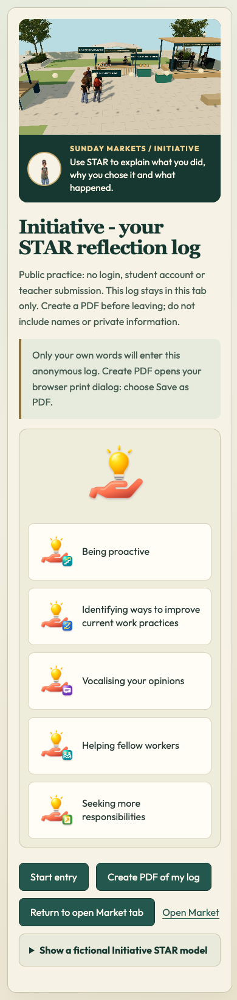

Initiative Portfolio overview and Market return
Scope and authority
Tania explicitly directs publication through the existing Integrate and test Initiative chat. This serial Portfolio successor is rebased over verified ESTbf33308 and preserves its back-window/entrance-return correction. It follows the existing approved anonymous builder; no authenticated learner-data or new service architecture is introduced.
Overview first
The public Market Portfolio link now opens the illustrated Initiative overview and existing six employability logos first. Start entry explicitly opens or resumes the existing five-step STAR builder. Date, own-experience prompts, anonymous reflection log and PDF/print remain. Existing authenticated dashboard code outside initPublicInitiativePortfolio remains byte-identical to the live predecessor; role and teacher functions are unchanged.
Natural Market return
Only an exact same-origin/same-project public Portfolio anchor opts into the opener relationship. A narrow boolean hook resumes an already-open Market, closes its dialog, resets navigation input and focuses the existing run; no reload, postMessage, learner-ID transfer or Storage API. Closed/cross-origin/wrong-project/false hooks fall back safely. A standalone Open Market link requests the real Sunday Market through its ordinary classroom gate. It does not mark the intro complete or bypass access. If a browser refuses to close a user-opened Portfolio tab, the existing Market still resumes and the fallback instruction remains.
Exact qualification
Five focused helper/DOM/return regressions pass.392unit tests across83files and355runtime hashes/107reachable imports pass. Actual isolated native Chrome1280/390 verifies overview before Start, all five written steps and date, anonymous log, one-page A4 PDF, zero Storage API calls and zero page errors. The actual Market DOM link guard, same-origin popup opener return preserving the same run ID, and standalone new-visit return through the normal classroom gate pass at both widths. Source/coverage CI passed. Prior full broad CI on1a7-based candidate recorded50pass/14inherited failures/1interrupted/208not-run; current-base CI is recorded separately, no all-CI-green claim. Actual Safari, physical touch, classroom/teacher submission and Tania acceptance remain separate.
Teaching, privacy and preservation
Existing shared Initiative source bank, Carolan attribution, six logos, STAR questions and teaching content are unchanged; no curriculum coverage/mastery claim. The public path remains anonymous and run-memory only, with the existing draft-loss warning; no new persistence, data collection, identity, account, role, provider, permission, backend, logs or telemetry. PDF is existing local print behavior. Authenticated portfolio/teacher submission remain separate. Preserve Archon, Notes, Chapel, EST controls/cards/cinema/rear-window/return and staged CI f156c32.
Actual reader update
The current Market reader still calls this repair pending. Its final three-sentence Portfolio status/route/footer correction is prepared in an isolated source build and will be published only after actual game verification. The unchanged reader baseline reproduces all four currently published HTML/JS/CSS outputs byte-for-byte; the prepared change keeps exact existing CSS and Market tabs/shared dropdown. Dated form/log screenshots remain labelled with their original capture date. This source-review page is not proof of game deployment.
Status and next action
Source-qualified candidate only. Publish exact source review, generate a genuine nine-file receipt, use normal guarded game push, verify actual live overview/form/log/PDF and Market/map/same-run/normal-gated return, then publish verified-live reader closeout including actual Market reader wording. Chapel room/transition clarification remains separate; do not replace artwork or treat the additive button as the entire fix.

Actual qualified anonymous overview. Game publication and acceptance separate.
Actual qualified anonymous overview. Game publication and acceptance separate.dashboards/dashboard.js 100644:1e6101c0d7c70625aee2e8ce81e167afa07f3cc4
dashboards/student.html 100644:062aea82bd48901253d25515647476c38d0b3fd4
modules/initiative/parallel/learning/portfolio/initiative-portfolio.mjs 100644:c13c54411d12ad260d3e50464047060a14e68d6b
playable-3d/app.js 100644:7a10872d3ab8a29d97a446085950f9f1bb5c46fc
playable-3d/guest-shell.mjs 100644:2d9169476966ee18537829890a5a8a92504a3ed9
playable-3d/index.html 100644:b375b021a0c63c2169ba420d835d7abe671a09cb
playable-3d/market-entrance/market-entrance.mjs 100644:cc9cef3ea3c96a1f63194da435cd4d71dbcd0e3c
playable-3d/night-market.js 100644:bbfba68d76483be5f6f7d437372f62cd72a68cbd
playable-3d/release-manifest.json 100644:0d48ac270a7335d178021a47970d541c9b2d57c4
Current bf33308-based CI source/unit392/83/coverage passed; browser first inherited admin-preview failed,1interrupted/271not-run after owned runner graceful stop. Focused Portfolio/native cases all pass; no full-CI success.